REA는 무엇이고, 스크린샷 복제와 뭐가 다른가요
리버스 엔지니어링은 완성된 프로그램에서 거꾸로 소스 코드와 동작 원리를 알아내는 일이에요. REA는 이 일을 AI 에이전트가 할 수 있게 해 주는 오픈소스 도구예요. 발표자는 이 라이브에서 "불법을 넘나들지 않는 선에서" 이 도구를 가장 잘 쓰는 법을 다뤄요.
스크린샷으로 베끼면 무엇이 빠지나요
REA 없이 에이전트에게 서비스 복제를 시키면, 에이전트는 서비스를 써 보면서 화면을 캡처하고 그걸 보고 따라 만들어요. 슬라이드 제목이 이 한계를 한 줄로 말해요. 화면은 베껴져도 움직임은 안 베껴진다는 거예요. 아래 설명 문장에는 호버·전환·타이밍이 정지 화면에 남지 않는다고 적혀 있어요.
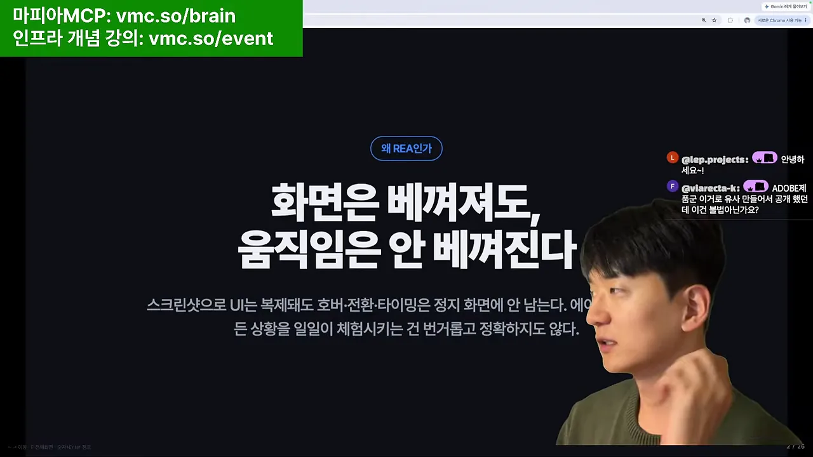
애니메이션은 단순해 보여도 "0.1초 동안 이렇게, 이어서 0.7초 동안 스프링 모션" 같은 시퀀스로 짜여 있어요. 에이전트는 화면을 사람처럼 영상으로 체험하지 않으니 이 타이밍을 알 수 없어요. 아래 그림은 두 방식이 가져오는 것의 차이예요.
REA는 어떤 도구인가요
슬라이드는 REA를 "화면 너머의 로직을 뜯어보는 도구"라고 소개하고 카드 세 장으로 정리해요. 01번 카드는 새 디컴파일러가 아니라 Ghidra·Hopper 같은 기존 분석 도구를 에이전트용으로 묶은 층이라고 해요. 02번은 대상이 넓다는 것(네이티브 바이너리·Electron·웹·안드로이드 APK(Android Package)), 03번은 결론마다 근거를 준다는 거예요. 맨 아래에 설치 명령 npx rea-agents setup이 보여요.
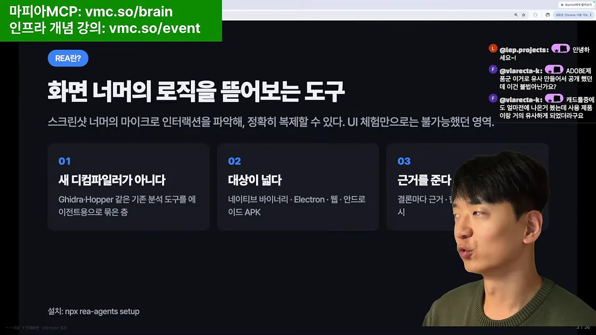
웹 서비스를 분석할 수 있다는 점, 그리고 PC(Personal Computer)에 내려받는 디스코드 같은 Electron 앱까지 다 뜯어 볼 수 있다는 점을 발표자는 크게 봐요. 채팅에서 "어도비 제품을 이걸로 뜯어 비슷한 걸 공개하면 불법 아니냐"고 묻자, 불법인지는 모르겠지만 이용약관 위반인 건 확실하다고 답해요. 약관 위반은 고소로 바로 대응하기 까다롭다는 말도 덧붙여요.
어디에 쓸 수 있나요 — 여섯 가지 유형
발표자는 REA로 할 수 있는 일을 여섯 가지 유형으로 나눠 슬라이드 한 장씩 보여 줘요. 슬라이드 오른쪽은 발표자 얼굴에 일부 가려져 있어서, 보이는 부분까지만 옮겼어요.
| 유형 | 무엇을 하나요 | 슬라이드·발표 속 예 |
|---|---|---|
| 01 기능 복제 | 앱을 통째로 분석해 같은 기능을 새로 만들어요 | 윈도우 그림판 11분, Apple Notes 15분 |
| 02 마이크로 인터랙션 복제 | 정지 화면에 없는 움직임을 코드에서 읽어요 | Claude 데스크톱 버튼 복귀 0.2초, igloo.inc 3D 스크롤 |
| 03 숨은 비즈니스 로직 파악 | 소스 없이 규칙을 꺼내요 | 배송비 규칙, Obsidian 검색 순위 |
| 04 유료 앱 재구현 | 매달 돈 내던 기능을 다시 만들어요 | 받아쓰기 앱 24분 |
| 05 내 서비스 보안 점검 | 내 앱이 얼마나 쉽게 뚫리는지 확인해요 | 권한 검사 없는 회원 API |
| 06 단종된 앱 복원 | 서비스가 끝난 걸 되살려요 | 1996년 게임의 사운드 계산 복원 |
기능 복제와 마이크로 인터랙션
첫 슬라이드의 파란 숫자가 걸린 시간이에요. 윈도우 그림판은 11분 만에 재구현했고(에셋 패널까지 추가), Apple Notes는 15분이 걸렸대요. 직접 만든 주식 분석 노드 에디터도 재현했다고 적혀 있어요.
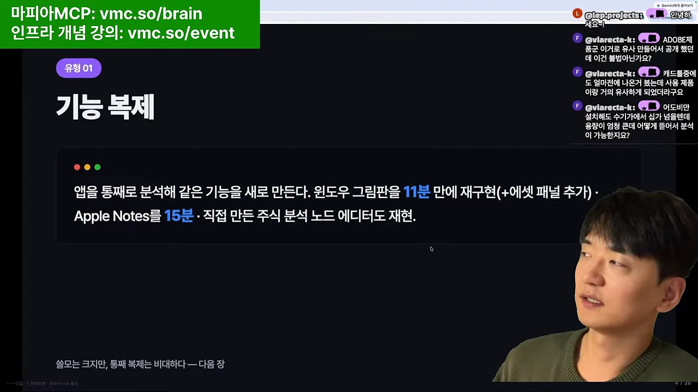
두 번째 유형은 발표자가 REA의 진짜 강점으로 보는 부분이에요. 슬라이드에는 Claude 데스크톱에서 버튼이 제자리로 돌아오는 시간이 0.2초라는 값, igloo.inc 사이트의 3D 스크롤을 30~40초 구간으로 분해해 three.js·GSAP(GreenSock Animation Platform)까지 짚어 낸 예가 나와요.
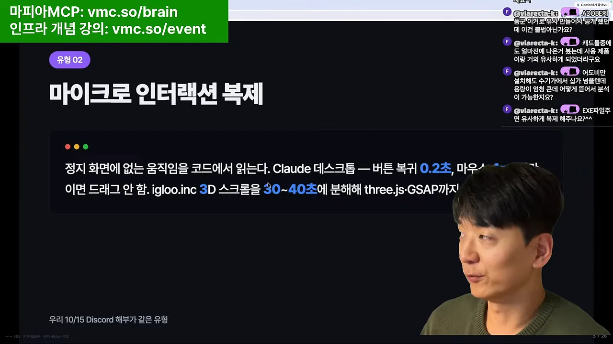
숨은 규칙과 유료 앱
세 번째 슬라이드는 소스 없이 규칙을 꺼낸 예를 숫자로 보여 줘요. 배송비가 기본 3,000원이고 5kg을 넘으면 kg당 500원이 붙는 식의 규칙, Obsidian 검색 순위를 4,915개 검색어까지 원본과 일치시킨 예, 계산기 % 버튼의 숨은 규칙이에요. 발표자는 Obsidian 검색 순위 로직이 클라이언트에 들어 있어서 바로 뽑아낼 수 있다고 설명해요.
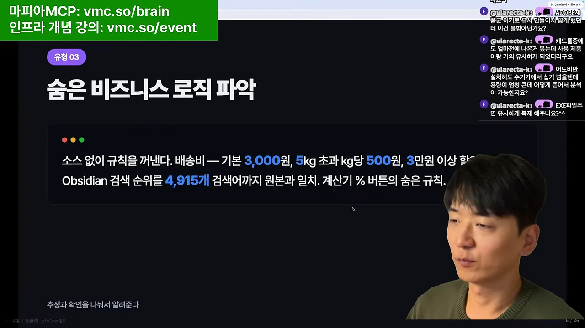
네 번째 슬라이드는 받아쓰기 앱을 24분에 재구현한 예예요. 이 슬라이드에는 앱 이름이 'Timeless(연 $144)'로 적혀 있는데, 뒤의 시연 슬라이드는 같은 받아쓰기 앱을 'Typeless'로 써요. 동영상 무음 컷을 Premiere 내보내기 114클립까지 프레임 단위로 맞춘 예도 함께 나와요.
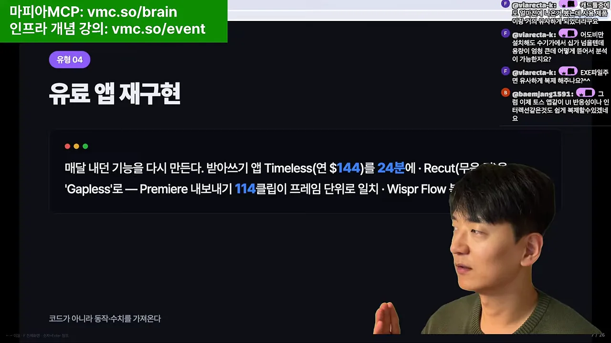
이 무렵 발표자는 트레이딩뷰 차트를 띄워 보여 줘요. 실시간 값이 바뀌어도 렉이 없는 차트예요. 예쁘면서 지표가 바로 뜨게 그리는 법, 데이터가 빠르게 오가도 부하 없이 갱신되는 통신 방식은 원래 고급 프론트엔드 기술이었는데 이제 뜯어서 베낄 수 있다는 거예요.
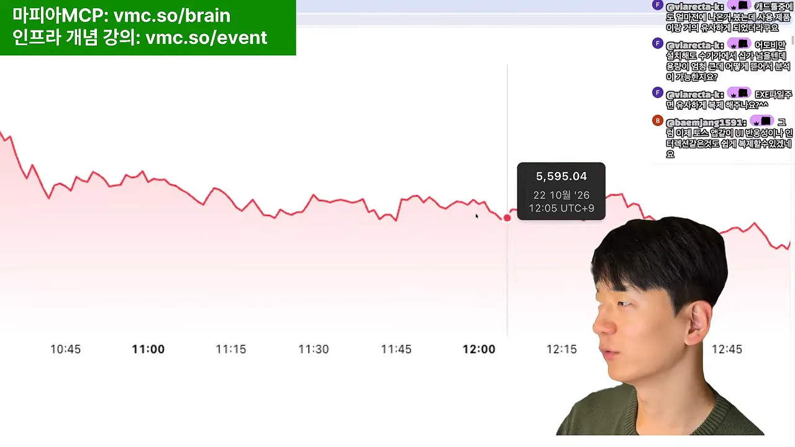
여기서 중요한 주장이 하나 나와요. 서버 사이드는 뜯어 볼 수 없지만, 서버 API의 상당수는 단순 CRUD(Create, Read, Update, Delete)라서 클라이언트 코드와 그 안의 API 스펙만 있으면 서버를 다시 만드는 건 어렵지 않대요. 서버 개발자들이 농담으로 "JSON 상하차"라고 하는 것처럼요. 다만 쿠팡이나 네이버 쇼핑처럼 유통망과 고객이 사업의 본체인 곳은 코드를 베껴도 같은 사업을 할 수 없어요. 타격은 소프트웨어만으로 승부하는 회사에 온다고 봐요.
보안 점검과 단종 앱 복원
다섯 번째 슬라이드는 내 앱이 얼마나 쉽게 뚫리는지 확인하는 용도예요. 함수 이름을 지운 잠금 앱에서도 검증 로직을 찾아냈고, 바이브 코딩 앱은 REA 없이도 키 노출로 뚫렸다고 적혀 있어요. 하단에는 "남의 앱에 돌리면 소송 — 내 앱으로만"이라는 경고가 붙어 있어요.
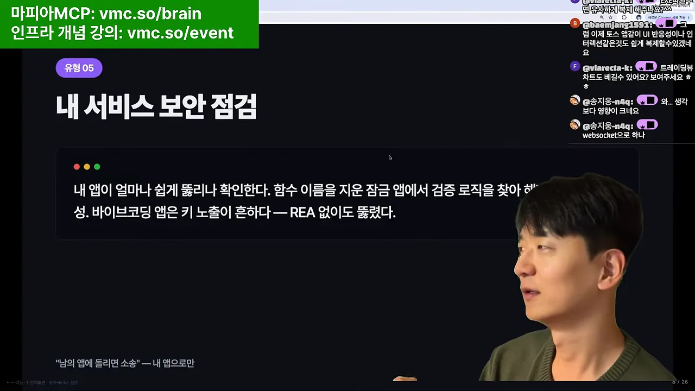
마지막 유형은 단종된 앱 복원이에요. 서버가 닫힌 게임을 로컬 서버로 다시 접속하게 하거나, 1996년 게임의 사운드 계산을 63바이트까지 똑같이 복원한 예가 슬라이드에 있어요. 발표자는 피카츄 배구나 불멸의 이순신 같은 옛 플래시 게임을 웹으로 되살리는 상상을 해요.
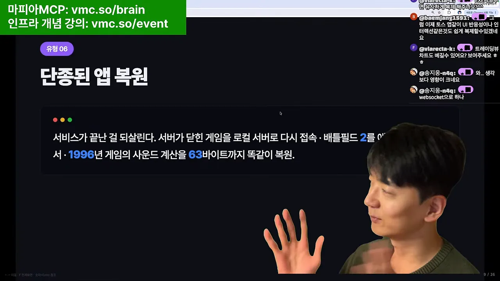
통째로 말고, 기능 하나의 수치를 가져와요
여섯 가지 유형을 보여 준 뒤 발표자는 "그럼 소프트웨어는 끝났나?"라고 묻고 바로 아니라고 답해요. 슬라이드 아래 문장이 이유예요. 통째로 복제하는 건 너무 비대해서 유지보수가 안 되고, 기능 하나를 골라 파악해서 가져오는 데 쓸모가 있다는 거예요.
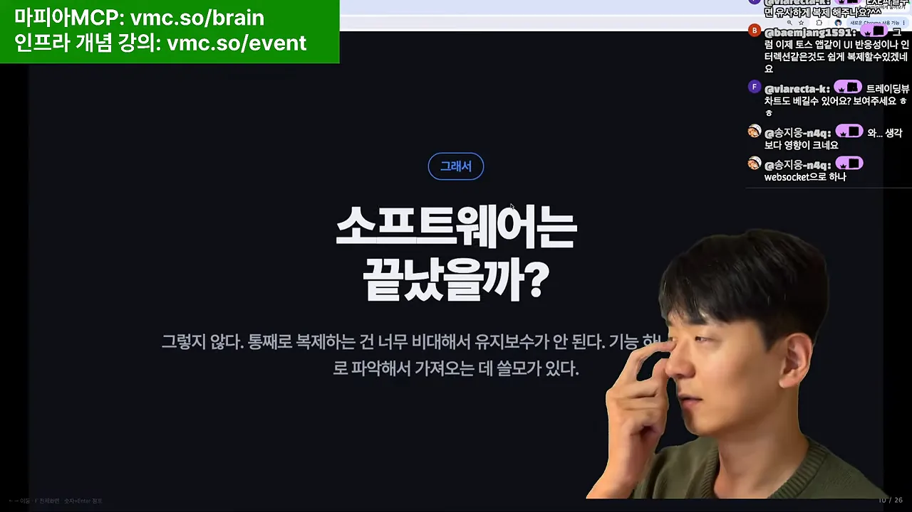
REA가 특히 빛나는 지점
다음 슬라이드는 카드 세 장으로 쓸모 있는 곳을 짚어요. 01 숨은 수치(임계값·가중치·타이밍), 02 로컬 vs 서버(무엇이 어디서 도는가), 03 파일 형식·엣지 케이스예요. 하단 문구가 경계를 그어 줘요. 레이아웃·색·타이포는 캡처로 충분하고, 도구는 움직임에만 쓰라는 거예요.
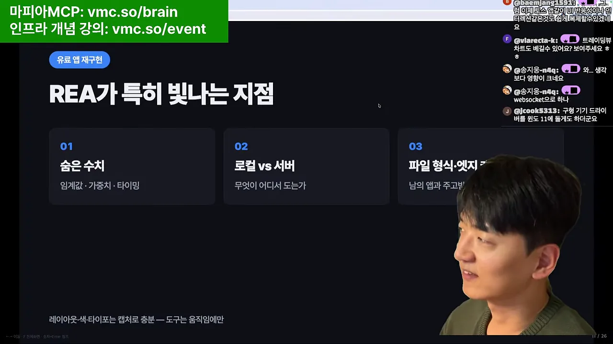
카드마다 발표자가 붙인 설명은 이래요.
- 숨은 수치 — 받아쓰기 앱은 전사를 잘하려고 클라이언트에서 미리 처리해서 보내요. 그 처리 방식을 보면 내 전사 알고리즘에 그대로 적용할 수 있어요.
- 로컬 vs 서버 — 서버 쪽 로직은 못 가져오지만 "이건 왜 서버에 뒀을까"라는 설계 감각은 얻어요.
- 엣지 케이스 — 결제 페이지는 우편번호가 틀렸을 때, 정보가 덜 들어왔을 때처럼 엣지 케이스가 기획의 거의 전부예요. 기성 서비스를 분석해 어떤 경우를 고려했는지 뽑으면 기획 교보재가 돼요. 코드 아키텍처와 폴더 구성도 참고할 수 있어요.
슬라이드 "뽑아오면 시간이 뛰는 로직"은 이걸 다섯 줄로 다시 정리해요. 하단 문구는 "내가 며칠 튜닝할 값, 원본엔 이미 있다"예요.
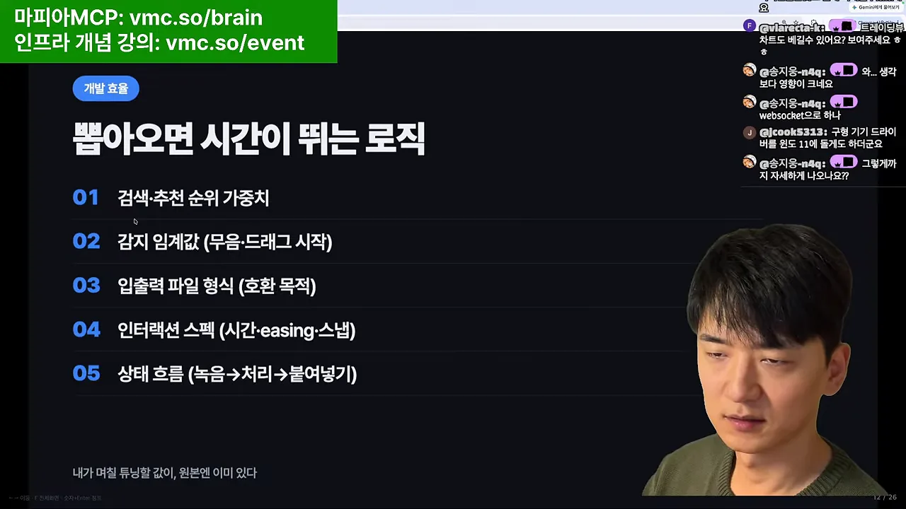
채팅에서 "그 정도까지 자세히 나오냐"고 묻자, 번들링이 돼 있어도 기술 스택에 따라 웬만하면 코드 구조까지 다 나온다고 답해요.
뜯어볼 앱은 어디서 찾나요
발표자가 추천하는 곳은 넷이에요. YC(Y Combinator) 회사 디렉토리, Product Hunt, GitHub Trending·Hacker News, Setapp이에요. YC 슬라이드는 최신 배치(Fall 2026)로 걸러 데스크톱·로컬 앱을 보라고 해요. 투자받은 신생 제품이 모여 있어서 원래도 서비스 아이디어를 찾을 때 자주 봤대요.
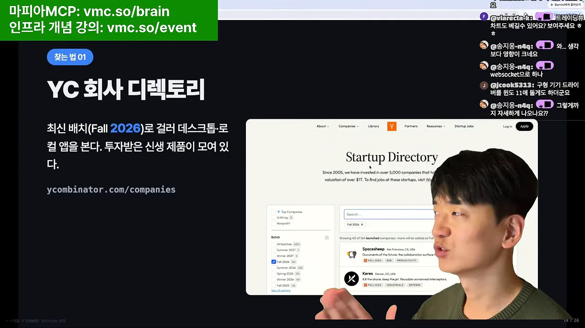
GitHub Trending은 이미 소스가 공개돼 있어서 뜯어 볼 대상은 아니에요. 대신 REA 결과를 맞춰 볼 정답지이자 연습 대상으로 쓰래요. Setapp 슬라이드에는 월 구독으로 묶인 맥 유틸 모음이라 "기능 하나에 구독"을 받는 작은 앱이 많고, 재구현 후보가 빽빽하다고 적혀 있어요.
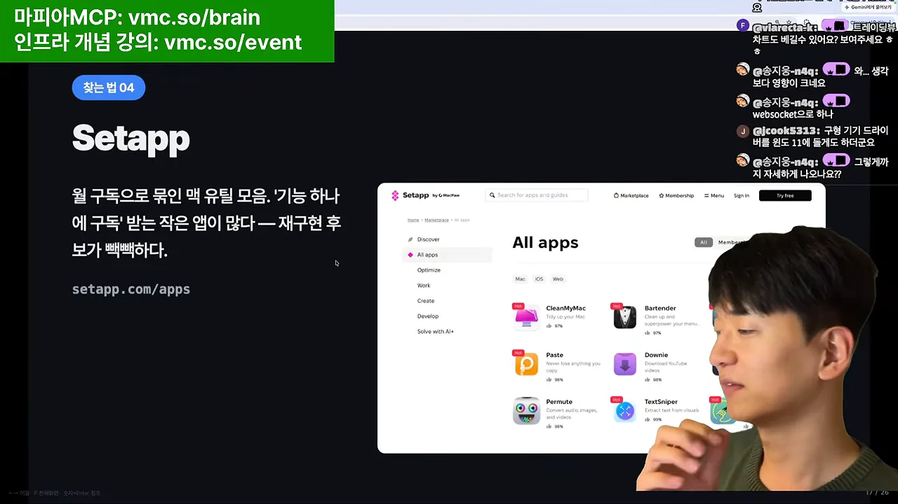
Typeless를 뜯어 보니
첫 시연은 받아쓰기 앱 Typeless예요. 슬라이드 한 줄이 처리 순서를 다 담고 있어요. 녹음 16kHz 원음, 3초 청크, 실시간 전송, 서버에서 전사, 0.5초 미만은 보내지 않음, 문맥을 함께 보냄이에요.
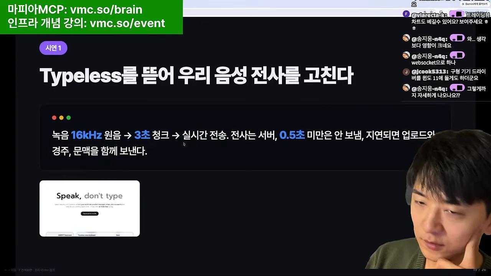
발표자 설명을 이어 붙이면 흐름은 아래와 같아요. 기기에서 하는 일과 서버에서 하는 일이 나뉘는 게 보여요.
결과 슬라이드는 "우리 전사에 가져올 Top 5"로 정리해요. 0.5초 미만·무음 입력은 스킵해서 환각 제거, 3초 청크 병렬 전사로 지연 감소, 전사 모델 상주로 로딩 제거, 문맥 주입 확대로 고유명사 정확도, LLM(Large Language Model) 정리 단계 분리로 가독성이에요.
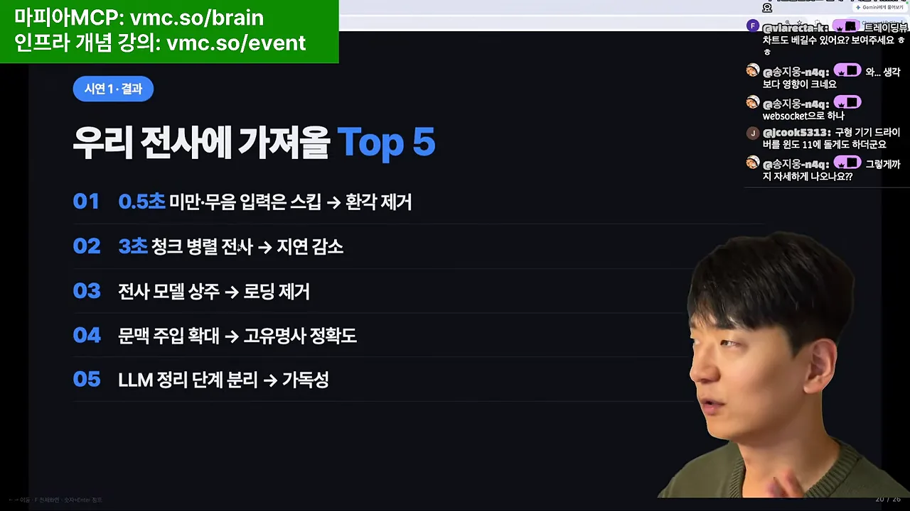
Obsidian 그래프와 주차 앱 스킬
두 번째 시연은 결이 달라요. 앞의 Typeless가 "알고리즘을 참고"하는 쪽이었다면, 여기서는 UI를 통째로 재현하는 쪽과 앱의 API를 에이전트에 넘기는 쪽을 보여 줘요.
Obsidian 그래프로 내 지식 카드 그리기
슬라이드 제목은 "Obsidian 그래프를 뜯어, 내 판단 카드를 그린다"예요. 본문에 REA로 확인한 것이 나와요. PixiJS 렌더러, 물리 계산 워커, 그리고 기본값(척력 1000, 링크 250, 호버 0.2 흐림)을 근거와 함께 확인하고 값만 가져와 새로 구현했어요. 그 위에 마피아MCP 카드 190장을 올렸고요.
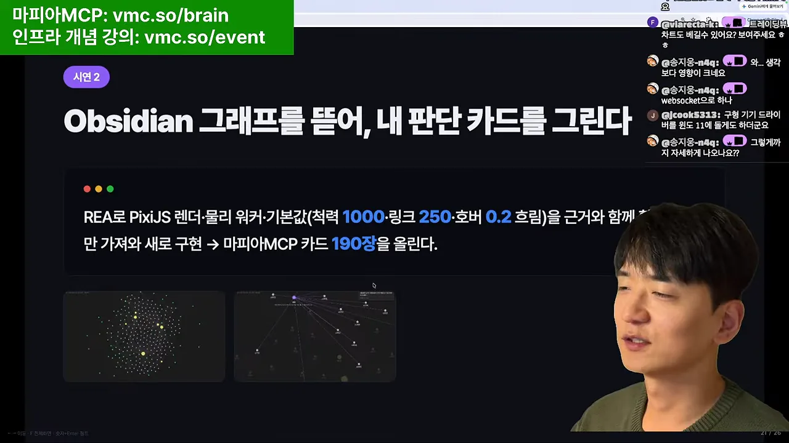
실제 화면에서는 스크롤로 확대·축소, 드래그 이동이 되고, 개발·협업·운영·검증 같은 큰 노란 노드 주변으로 카드들이 퍼져 있어요. 마우스를 올리면 카드의 상세 내용이 보여요.
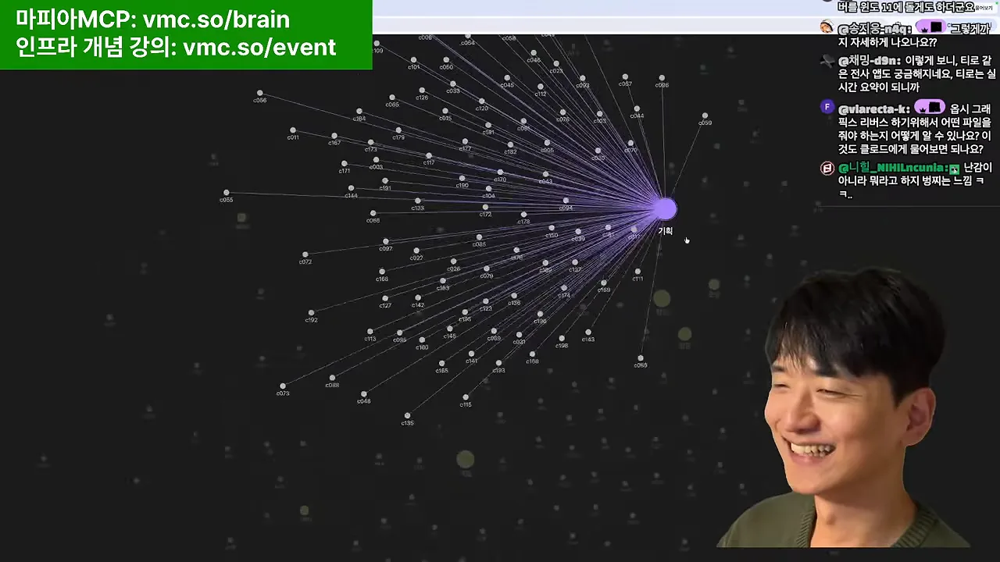
Opus에 그냥 만들어 달라고 해도 비슷하게는 나올 수 있어요. 그래도 원본을 뜯으면 Obsidian이 UI 수준에서 해 둔 성능 최적화와 마이크로 인터랙션이 같이 따라와서 한 번에 고품질로 나온대요. 기획자가 "인스타그램처럼", "Obsidian처럼 만들어 주세요"라고 하면 난감했는데 이제는 진짜로 그렇게 된다는 거예요. 그래서 발표자는 디자인 엔지니어링이 더는 해자가 되지 못하고, 그쪽으로 진로를 잡은 프론트엔드 개발자는 난감할 거라고 말해요.
앱으로만 되던 일을 에이전트에게
다음 슬라이드는 순서를 정해 줘요. 01 공식 API가 먼저(있으면 그대로 쓴다 — 오늘 이 방송 예약도 그렇게 했다), 02 없으면 브라우저로 구조를 파악(커뮤니티 공지는 브라우저로 올렸다), 03 판단 질문 하나예요. 세 번째 카드는 얼굴에 가려 "내가 손으로 하는 것과…"까지만 보여요.
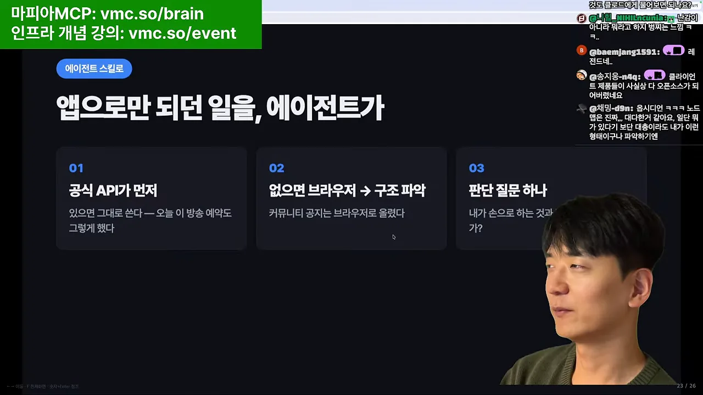
발표자의 사례는 주차 예약이에요. 본가에 갈 때마다 방문 차량을 특정 앱으로 등록해야 했는데, 앱으로만 되니 에이전트에게 시킬 수가 없었어요. 그래서 그 앱을 REA로 뜯어 API를 파악하고, 그 API를 부르는 스킬을 만들었어요. 화면은 디스코드에서 "10월 22일 본가 주차 예약 잡아줘"라고 하자 에이전트가 방문 차량 예약을 등록했다고 답하는 장면이에요.
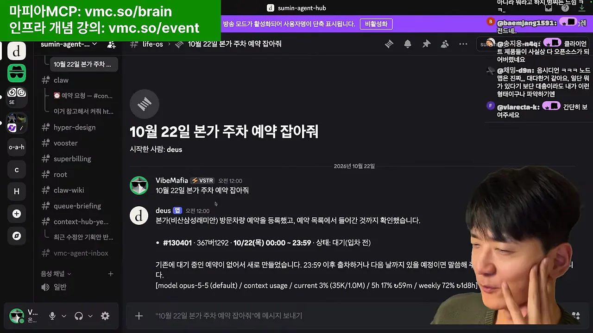
채팅에서 "저도 몇 개 만들었는데 나중에 막히더라"는 말이 나와요. 발표자도 막힐 수 있다고 인정해요. API를 직접 부르면 앱 사용자와 패턴이 달라서, 서비스가 모니터링하다 차단할 수 있거든요. 보안 수준이 높을 것 같은 서비스에는 권하지 않고, 이 주차 서비스는 그렇지 않아 보여서 해 봤대요. 유튜브 커뮤니티 공지도 내부 API를 따서 부를 수 있겠지만, 걸리면 채널이 정지되니 브라우저 자동화로 해요.
되는 것과 해도 되는 것
이 구간의 마지막 슬라이드가 선을 그어요. 무엇을 가져오나(코드·에셋 X, 동작·원리 O), 무엇에 쓰나(학습·개인용 O, 팔거나 배포 X), 누구 것인가(내 앱·오픈소스부터), 그리고 유튜브도 봇 증명·세션 서명으로 막는다(yt-dlp로 확인)예요.
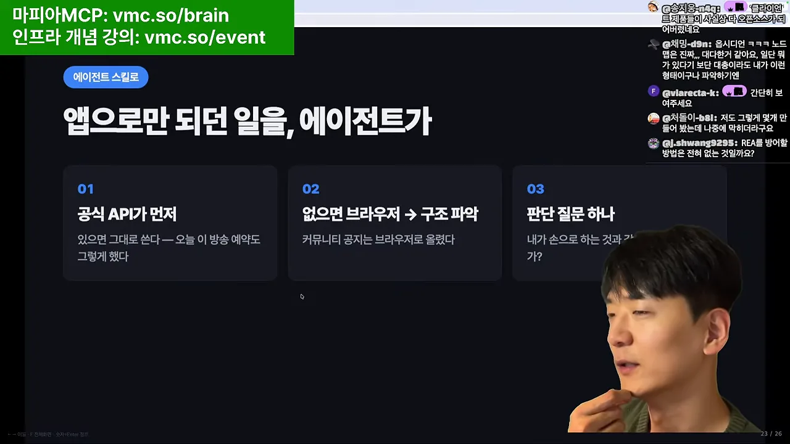
네 번째 줄은 만드는 쪽에게 주는 힌트이기도 해요. 유튜브는 봇인지 확인하는 인증서와 세션마다 서명하는 로직이 있어서 뜯어도 남용하기 어렵대요. 이런 구조를 만들어 둬야 한다는 얘기가 다음 섹션으로 이어져요.
클라이언트에 둔 건 이미 공개된 거예요
이제 시선을 만드는 쪽으로 돌려요. 발표자가 먼저 짚는 건, 리버스 엔지니어링이 새 개념이 아니라는 점이에요. 클라이언트에 있는 코드는 원래부터 공개된 것이고, "클라이언트 코드는 오픈소스라고 생각하라"는 말도 예전부터 있었어요. 달라진 건 이제 누구나 할 수 있다는 것뿐이에요.
슬라이드는 이 구간을 카드 세 장으로 정리해요. 01 클라이언트에 둔 건 공개된 것(비밀 키·가격 규칙·권한 체크는 서버로), 02 내 앱을 먼저 뜯어 본다(바이브코딩 앱은 키 노출이 흔하다), 03 해자는 UI·기능 하나가 아니다(데이터·운영·신뢰·속도)예요.
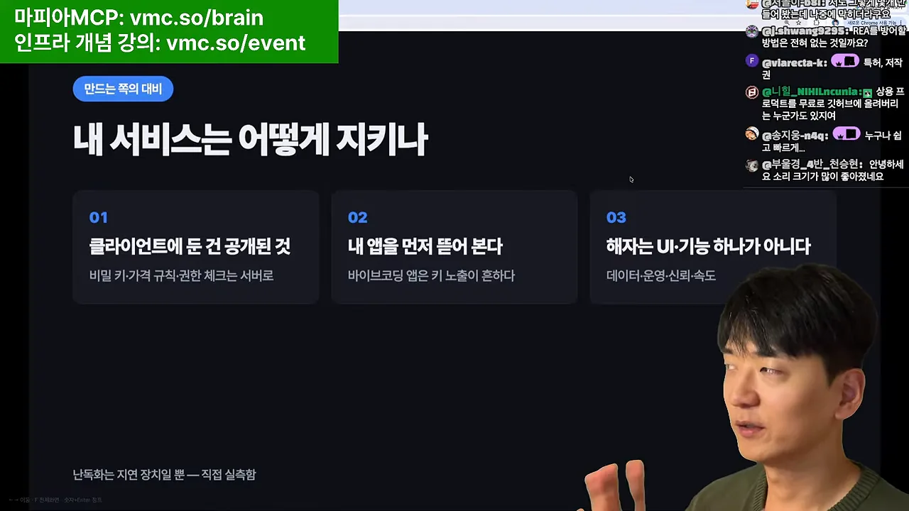
서버로 옮겨야 할 세 가지
첫 번째 카드를 발표자는 예시로 풀어요. 아래 그림의 왼쪽 칸이 REA가 볼 수 있는 영역이에요. 아래 세 칸에 있는 것들이 클라이언트에 남아 있으면 뜯는 순간 드러나요.
권한 체크는 설명이 조금 더 필요해요. 관리자 화면처럼 권한에 따라 UI를 다르게 보여 줄 때, 클라이언트 사이드 렌더링으로 고르면 권한 없는 사람의 브라우저에도 그 UI 코드가 이미 내려와 있어요. 화면에 안 보일 뿐이라 리버스 엔지니어링하는 순간 드러나요. 그래서 서버가 권한을 판정하고 맞는 화면만 서버 사이드 렌더링으로 내려 줘야 한대요.
내 앱부터 뜯어 보세요
발표자는 과외를 하면서 수강생들의 서비스를 보는데, 시크릿 키 노출이 정말 많대요. 모바일 앱은 특히 더 그렇고요. 바이브 코더로 개발을 잘 모르고 만들고 있다면 "무조건 문제가 있을 것"이라며 REA로 자기 앱을 꼭 뜯어 보라고 해요.
해자는 어디로 옮겨 갔나요
세 번째 카드는 사업 쪽 얘기예요. UI·UX(User Experience)와 매끈한 기능은 이제 해자가 되기 어렵고, 쌓인 데이터·운영·신뢰·속도가 관건이래요. 그래도 복제가 쉽다고 다 넘어가지는 않아요. SaaS의 본질은 남이 유지보수해 줘서 편하다는 데 있으니, 유지보수 부담이 큰 도메인이면 복제가 쉬워도 돈을 내고 써요. 유지보수 공수가 거의 없는 도메인은 안타깝지만 예외예요.
실습: Claude Code에 링크만 주세요
개념 설명을 마치고 발표자는 Claude Code로 직접 시연해요. REA 페이지에 설치 방법이 나와 있지만 그걸 따라 할 필요가 없대요. GitHub 링크만 주면 Claude Code가 알아서 한다는 거예요.
프롬프트는 한 줄과 링크 하나
화면 오른쪽 위 말풍선이 발표자가 보낸 프롬프트 전부예요. "아래 링크와 같은 REA 도구를 사용해서, obsidian의 지식 그래프 렌더링 로직을 분석해보자"와 GitHub 주소예요. 그 아래 Claude Code가 세운 계획 네 줄이 보여요. REA 도구와 기존 데모 자료 확인, REA 설치·Obsidian 앱 확보, 그래프 렌더링 로직 분석 실행, 분석 결과 정리·보고예요.
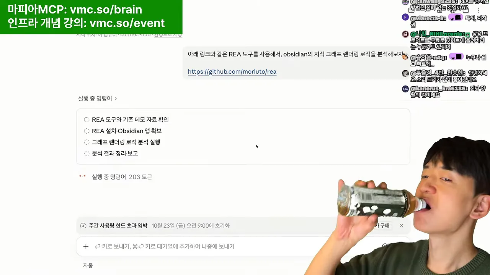
분석이 끝나자 Claude Code가 구조도를 그려 줬어요. 왼쪽 보라색 상자는 메인 스레드(app.js)로 설정 패널(척력 10→세제곱 1000), 입력 처리(휠 1.5배·드래그 5px), PixiJS 렌더러(노드 8~30px·라벨 페이드)가 들어 있어요. 오른쪽 초록 상자는 Graph Worker(sim.js)로 메시지 핸들러(중심력 0.1·링크 250), d3-force 물리 틱(60fps·속도 ×0.6), 위치 버퍼(Float32 x,y)예요.
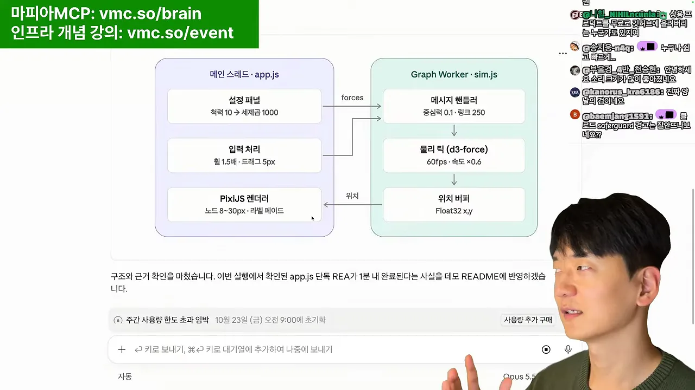
구조도 아래 문장도 눈여겨볼 만해요. Claude Code가 "app.js 단독 REA가 1분 내 완료된다는 사실을 데모 README에 반영하겠다"고 해요. 발표자는 잘 만든 소프트웨어일수록 코드 하나하나가 작고 콤팩트해서 오히려 분석하기 쉽다고 말해요.
기능을 하나씩 더 가져오기
다음 요청은 정보 패널이에요. 프롬프트는 "노드를 클릭했을 때 뜨는 정보 패널도, obsidian이 어떻게 구현했는지 파악하고, 우리 UI에도 유사한 스타일과 인터랙션으로 구현해보자"예요. 오른쪽에 지금까지 만든 그래프가 떠 있어요.
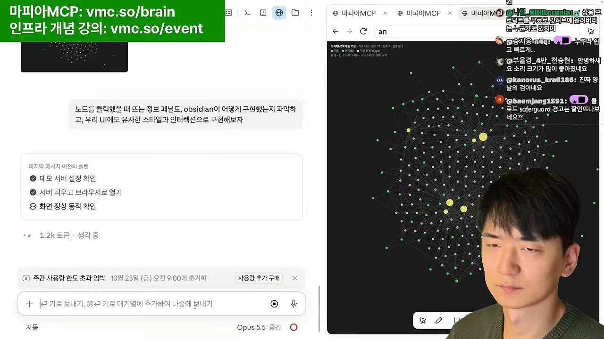
이 사이에 발표자가 덧붙인 말이 있어요. 난독화 서비스나 AI 리버스 엔지니어링 방어 도구를 써도 조금 번거로워질 뿐 중요한 로직은 다 뜯긴대요. Claude의 세이프가드 경고도 잘 안 떴다고 해요. 다만 내부 API를 뜯어 쓰겠다는 요청은 약관 위반이라며 잘 안 들어줬고, 유튜브를 리버스 엔지니어링해 달라는 요청도 거절했대요.
Notion 에디터 뜯기
세 번째 요청은 카드 본문을 상세 패널에서 고칠 수 있게 하고, 그 에디터를 Notion 스타일로 만드는 거예요. Notion 데스크톱 앱을 먼저 봤더니 앱 안에 에디터 코드가 없어서 웹으로 갔어요. 왼쪽 로그를 보면 REA가 Notion 페이지에서 스크립트 753개(청크·라우트·소스맵 4개)를 수집했고, 이 스크립트를 파일로 내보내 에디터 로직을 찾겠다고 해요.
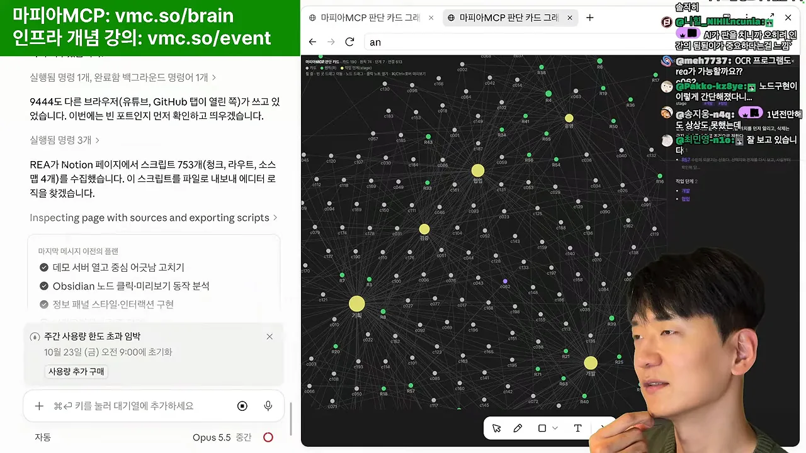
발표자는 여기서 번들을 풀어 설명해요. 웹페이지는 아마 React로 만들었을 거고, React 앱은 수많은 컴포넌트와 파일이 빌드 과정에서 하나로 묶이고 어느 정도 난독화돼요. REA는 그 묶인 결과물을 내려받아 읽는 거예요. 로그인 상태에서만 보이는 로직도 있어서, 로그인한 브라우저가 필요하다고 하자 발표자는 browser-use로 평소 쓰는 크롬을 열게 했어요. 그러면 로그인 정보가 이어져요.
시청자 질문 몇 가지
- OCR(Optical Character Recognition) 프로그램도 되나요? 내장 모델이 기기에서 돌아가는 프로그램이면 당연히 된대요.
- 게임도 되나요? 게임이 리버스 엔지니어링하기 제일 좋대요. 성능 최적화 때문에 클라이언트에서 처리하는 로직이 많거든요.
- 공동인증서로 서류 발급하는 것도 자동화되나요? REA보다는 AI 브라우저로 하는 게 낫고, 간편 인증은 직접 해야 한대요.
발표자는 서비스 사용법이 궁금하면 매뉴얼보다 클라이언트를 뜯는 게 빠르겠다는 말도 해요. 그리고 내부 API를 마음대로 부르지 않는 한, 뜯는 행위 자체는 서비스 회사가 알아차리기 어렵다고 짚어요. 인터넷을 끊고 뜯을 수도 있으니까요.
실습 결과: Notion식 에디터와 Raycast 랜딩
Notion 에디터 작업이 도는 동안 발표자는 다른 세션을 하나 더 열어요. 이번에는 디자인이에요. 평소 좋아하는 Raycast의 랜딩 페이지를 그대로 복제하되, 자신이 만드는 제품 deus의 랜딩 페이지로 바꿔 달라는 요청이에요.
랜딩 페이지 복제 요청
입력창에 쓰고 있는 프롬프트가 보여요. "REA 도구를 사용해서, 아래 homepage의 디자인 및 인터랙션을 분석하고, 이와 동일한 디자인…"까지 쳤고, 이어서 내용만 deus 기준으로 바꾸고 이미지 등 에셋은 그대로 쓰라고 덧붙여요. 왼쪽 목록에는 앞서 돌리던 "Obsidian 지식 그래프 렌더링 분석" 세션도 보여요.
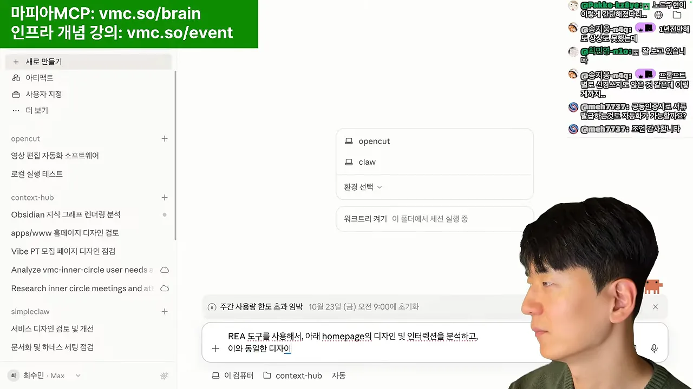
발표자는 Notion식 에디터가 원래 구현하기 어려워서 따로 팔리기도 하고 외주로 맡기기도 하는 작업이라고 설명해요. 오픈소스가 있지만 커스터마이징과 성능이 아쉬워 직접 만드는 경우가 많은데, 이제는 그럴 필요가 없어졌다는 거예요.
Notion식 에디터 완성
완성된 화면은 Obsidian 그래프와 Notion 에디터를 섞은 모양이에요. 왼쪽에 카드 그래프가 있고, 노드를 고르면 오른쪽 패널에 카드 본문이 마크다운 문서로 열려요. 오른쪽 Claude Code 계획을 보면 Notion 로그인 브라우저 확보·REA 캡처, 카드 파일 구조·왕복 변환 규칙 확인, 저장 서버(serve.py) 만들기까지 끝났고, Notion식 블록 에디터 구현이 진행 중이에요.
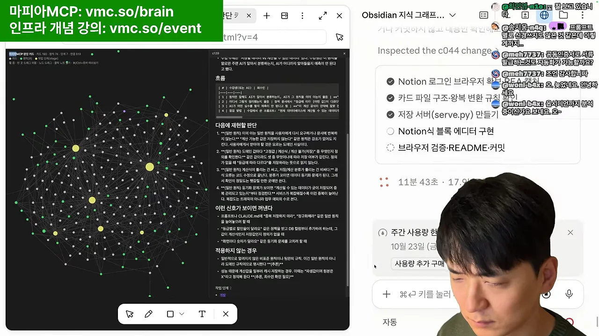
발표자가 직접 써 보는 장면이 이어져요. #을 치면 제목이 되고, /를 치면 블록을 넣는 메뉴가 떠요. 할 일 목록, 디바이더, "1." 다음 점으로 번호 목록이 되는 것까지 돼요. 마지막에는 코드 블록을 넣어 C 언어 Hello World를 써 봐요.
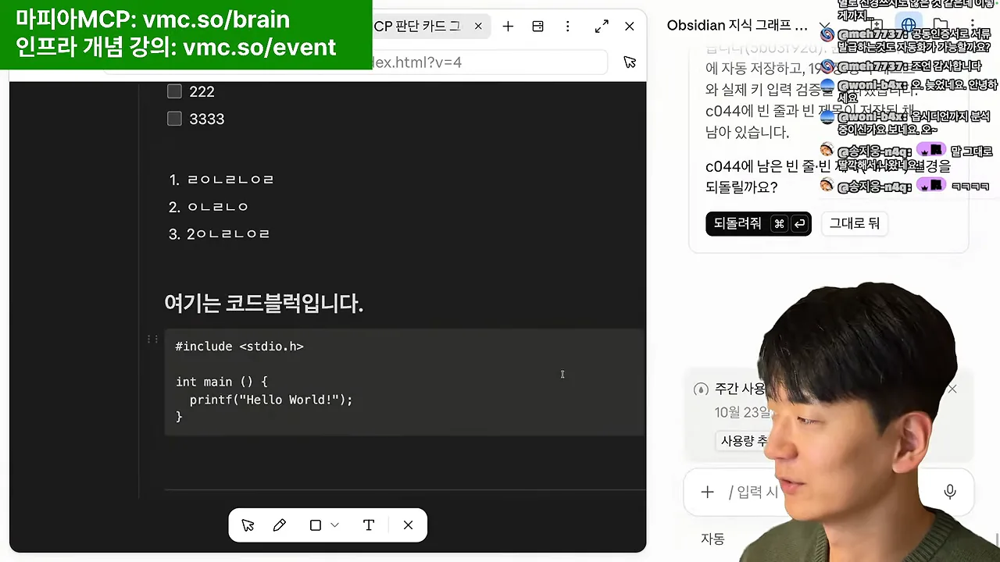
발표자는 겉모양만 닮은 게 아니라고 강조해요. Notion은 내용을 조금씩 고칠 때마다 서버에 저장 요청을 주기적으로 보내는데, 그 방식까지 따라 했으니 상용 서비스에 써도 성능 문제가 적을 거래요. 영상 플레이어도 같은 방식으로 쓸 수 있다고 해요. 플레이어 로직은 전부 클라이언트에 있으니, 강의 플랫폼(LMS(Learning Management System))을 만든다면 기존 강의 페이지 하나를 뜯어 플레이어 스펙을 그대로 구현하고 디자인만 바꾸면 된대요.
Raycast를 닮은 deus 랜딩 페이지
질의응답 사이에 랜딩 페이지가 완성돼요(영상 01:25:29부터). 클론하라고 시킨 뒤 한 번에 나온 결과래요. 아래는 "deus는 또 뭘 하나?" 섹션이에요. 왼쪽에 기능 문장이 나열되고, 호버한 문장("코드를 고친다")만 밝아져요. 오른쪽에는 Raycast의 명령 팔레트 UI가 그대로 들어가 있어요.
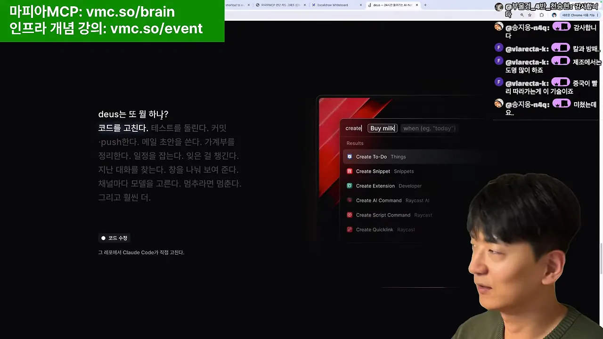
아래로 내려가면 "채널마다 레포 하나" 섹션이 나와요. 오른쪽 위 개발·운영·개인 탭을 누르면 카드 묶음이 바뀌고, 카드마다 #life-os, #root, #notes 같은 채널이 무슨 일을 하는지 적혀 있어요.
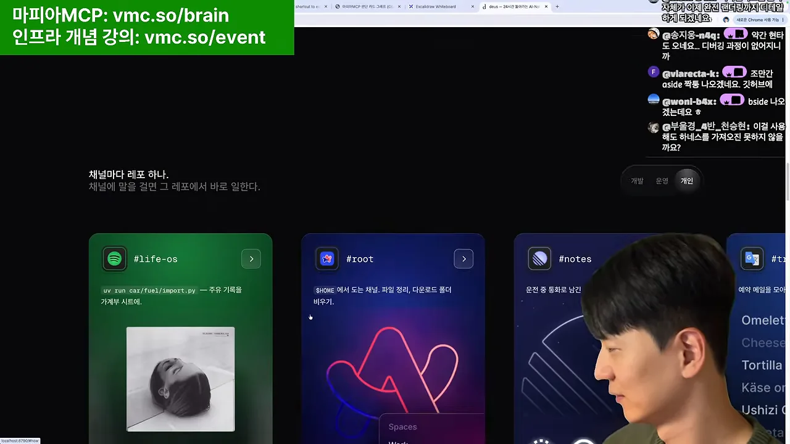
마지막 섹션은 빨간 붓질 위에 "24시간 돌아가는 AI-Native Company OS"라는 문구와 대기자 명단 버튼이에요. 발표자는 deus를 Claude Code와 달리 24시간 알아서 돌고, 회사의 자동화와 프로세스를 통제하는 거버넌스에 특화된 제품이라고 소개해요.
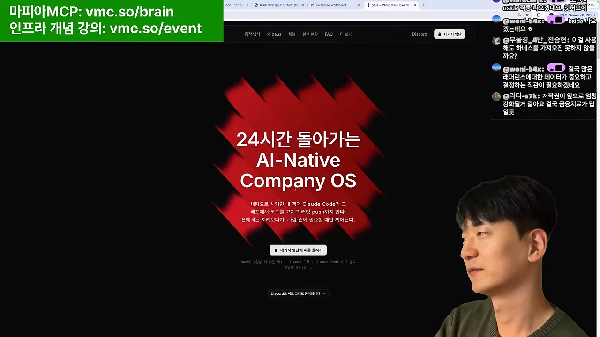
그래서 디자인 수요에도 타격이 있을 거래요. 디자인 에이전트를 만들고 있던 발표자는 "예뻐 보이는 거 그냥 베끼면 그만인데 뭐하러 디자인 에이전트에게 맡기냐"며 그 필요가 사라진 것 같다고 해요. 이제는 베낄 걸 잘 찾는 능력이 중요하다는 채팅에도 동의해요. 저작권이 강화될 거라는 채팅에는, 코드에서 티가 안 나게 베끼는 건 쉬워서 본질적으로 막을 수 없고 새 표준으로 받아들일 수밖에 없다고 답해요.
만드는 쪽은 어떻게 막나요
라이브 후반은 질의응답이에요. 질문이 대부분 "그럼 만드는 쪽은 어떡하나"로 모여서, 답을 주제별로 묶었어요.
크롬 익스텐션과 내 프로젝트
크롬 익스텐션을 만드는 중이라는 시청자에게 발표자는 카피는 감안해야 한다고 답해요. 익스텐션은 정말 "딸깍"으로 복제된대요. 서버 사이드 렌더링을 쓰면 세세한 프론트엔드를 어느 정도 숨길 수 있는 정도예요.
직접 만든 프로젝트에 REA를 써서 더 좋은 리뷰를 받을 수 있냐는 질문에는 세 가지 방법을 알려 줘요.
- 레드팀 보안 테스트 — REA로 내 프로젝트를 해킹해 달라고 시켜요.
- 아키텍처 비교 — 비슷한 주제의 제품을 REA로 분석해 코드 아키텍처를 뽑고, 내 코드베이스와 비교해 무엇을 고칠지 물어요.
- 기술 스택 검토 — 그 제품이 왜 그 기술을 썼는지 묻고, 내 프로젝트에도 맞는지 물어 괜찮으면 적용해요.
REA를 막을 대책이 있나요
가장 많은 반응이 나온 질문이에요. 화면에 질문 카드를 띄우고 답해요.
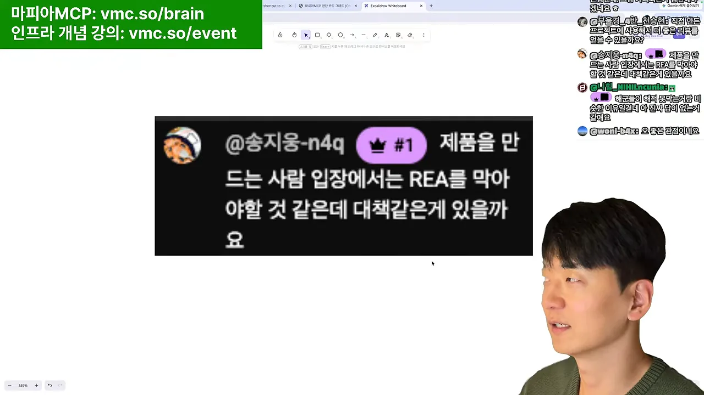
그래도 할 수 있는 조치는 있어요. 이 질문과 01:36 무렵의 정리를 합치면 세 가지예요.
- 주요 로직을 서버로 옮겨요. 클라이언트에 있는 로직은 전부 따이니, 서버로 갈 수 있는 건 서버로 보내요. 보안상 치명적인 문제가 생기지 않게 민감한 로직부터요.
- API 남용을 감시해요. 호출 로그를 쌓아 이상한 패턴을 잡아요. 내부 API를 직접 부르면 사람이 UI로는 낼 수 없는 속도가 나와요. 로그인에서 구매까지 1초면 이상하죠. 발표자는 JWT(JSON Web Token) 대신 세션을 쓰라고도 해요. 서버가 발급해 유지하는 세션만 인증을 통과하니 남용을 막기 좋대요.
- 유료 데스크톱 앱은 인증한 사람에게만 코드를 내려보내요. 구매한 뒤 뜯는 건 어쩔 수 없지만, 일단 돈은 냈다는 뜻이니까요.
세 번째는 구현 방식이 중요해요. 아래 그림의 위쪽처럼 앱을 통째로 내려받게 하고 라이선스로 잠가 두면, 잠긴 코드도 이미 사용자 컴퓨터에 있어요. 아래쪽처럼 빈 껍데기만 받게 하고, 인증이 끝나야 실제 코드가 내려오게 해야 해요.
발표자는 결국 원래 지켜야 했던 보안 지침을 계속 지키면 된다고 말해요. 다만 보안을 뚫을 수 있는 사람이 많아졌을 뿐이래요. 앞으로는 인디 개발자의 제품을 사람들이 REA로 뜯어 보고 보안이 엉망이면 지적하는 모습이 흔해질 거라고 봐요.
난독화로는 왜 못 막나요
"REA 못 하게 난독화 기술도 발전하나요"라는 질문에 발표자는 구조적으로 막을 수 없다고 답해요. 난독화를 해도 프로그램은 실행할 수 있어야 해요. OS(Operating System)든 브라우저든 그 코드를 해석해서 실행할 수 있다면, 같은 방식으로 분석도 할 수 있어요. 난독화된 코드가 분석에 품이 더 드는 건 맞지만, 주요 로직과 디자인이 빠져나가는 건 못 막아요. 게다가 웹을 해석하는 브라우저 엔진(Chromium)이 오픈소스라서 분석 도구를 만들기도 쉬워요.
Electron은 설정에 따라 브라우저 쪽에 API를 노출하지 않을 수 있었는데 그것도 다 파 버리겠다는 채팅에도 맞다고 해요. 클라이언트에 보안을 거는 건 별 의미가 없다는 거예요.
회사 소프트웨어를 뜯어 봐도 되나요
이용약관은 아마 하지 말라고 할 거래요. 하지만 클라이언트 코드는 뜯어도 회사가 알아차리기 정말 어려워요. API를 임의로 부르지 않는 한 흔적이 남지 않거든요. 발표자의 비유는 햄버거예요. 맥도날드에서 햄버거를 사서 포장을 뜯고 분해해도 맥도날드는 알 방법이 없대요. 그렇다고 마음껏 뜯으란 말은 아니고, 사실이 그렇다는 거예요.
어떤 비즈니스가 버티나요
마지막 30분 동안 발표자는 "그럼 어떤 비즈니스가 살아남나"를 여러 질문에 걸쳐 답해요. 라이브 중간(50:54 무렵)에 한 얘기까지 모으면 아래 표처럼 갈려요.
| 구분 | 예 | 발표자가 든 이유 |
|---|---|---|
| 타격이 큰 쪽 | 유료 React UI 라이브러리 | 데모를 띄워 두면 소스를 재현할 수 있어요 |
| 타격이 큰 쪽 | 예쁜 루틴 관리 앱, CleanMyMac 같은 유틸 | UI와 기능이 전부라 바로 베껴져요 |
| 타격이 큰 쪽 | Obsidian, 어도비, Figma | 순수 소프트웨어로 승부하고, 알고리즘과 코드가 곧 자산이에요 |
| 버티는 쪽 | 인스타그램 같은 소셜 앱 | 앱을 복제해도 콘텐츠가 따라오지 않아요 |
| 버티는 쪽 | 아마존, 쿠팡 | 물류와 유통망이 사업의 본체예요 |
| 버티는 쪽 | AI 제품, API 비즈니스 | 핵심이 서버 뒤에 있어서 클라이언트를 뜯어도 의미가 없어요 |
유료 UI 라이브러리는 끝났나요
MUI(Material UI) 같은 React 디자인 시스템 라이브러리도 다 뜯기겠냐는 질문이 화면에 떠요. MUI는 원래 오픈소스라 상관없지만, 유료 라이브러리는 사정이 달라요.
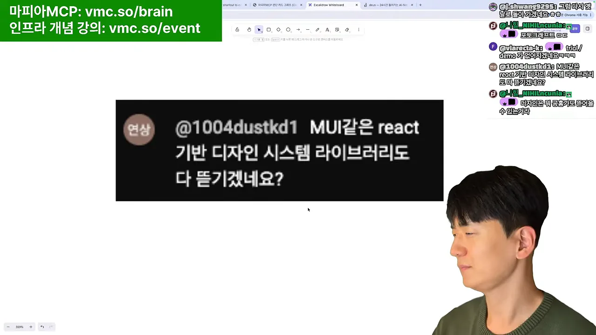
디자인을 뜯어 보는 건 예전에도 가능했어요. 그래도 사람들이 돈을 낸 건 복잡한 인터랙션을 직접 구현하기 귀찮아서였는데, 이제는 그것도 에이전트가 대신해요. 발표자는 백엔드·인프라 엔지니어가 미래 같다고, 프론트엔드 출신인 자신은 탈출했다고 농담처럼 말해요.
어도비와 Figma는 어떻게 하나요
완전히 다른 비전을 찾아야 한대요. 결국 자체 AI 역량이 중요해진다는 거예요. AI 모델이 좋으면 그걸로 장사할 수 있으니까요. 브랜드 가치가 중요해지지 않겠냐는 의견에는 회의적이에요. 브랜드가 좋아도 뜯어서 공짜로 쓸 수 있다면 굳이 돈을 내지 않을 거래요.
서버 뒤에 있는 AI·API
발표자가 가장 단단하다고 보는 건 AI와 API 비즈니스예요. Claude Code를 뜯어서 베껴 봤자 핵심은 Anthropic 모델이고, 그건 서버에 있어요. 나중에 AI 모델도 리버싱해서 중요한 걸 뽑아내는 시대가 오지 않겠냐는 질문에는 어렵다고 답해요. 모델은 그쪽 컴퓨터에 있어서 제대로 된 해킹 없이는 접근조차 못 해요. 백엔드를 뜯는 건 리버스 엔지니어링이 아니라 해킹, 크래킹이래요.
반대로 발표자는 씁쓸한 가능성도 말해요. 특정 나라에서만 서비스되는 인기 앱을 뜯어 다른 나라 버전으로 내는 식의 "대해적 시대"가 열렸다는 거예요. 인디 게임이 공개되자마자 베낀 게임이 나온다는 게임 업계 얘기도 꺼내요.
결론은 전통적인 원칙으로 돌아가요. 클라이언트는 어차피 털리니 중요한 걸 하나도 두지 말고 UI를 그리는 용도로만 쓰라는 원칙이에요. 발표자는 앞으로 더 그런 시대가 될 거라며, 자신도 앞으로 만들 소프트웨어는 털리지 않게 보안을 많이 고민하겠다고 마무리해요.